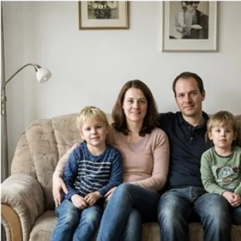
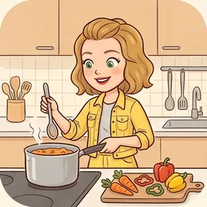

deutschoderwas · Sprechclub · Woche 2 · Strang C · Teil 1 ·
Muss man Geburtstage eigentlich feiern?
Für die einen ist es der schönste Tag im Jahr, für die anderen eine Pflichtveranstaltung mit Kuchen. Heute sammeln wir die Wörter, die Argumente — und die Sätze, mit denen man höflich absagt.
Dein Niveau
Gleiches Thema, andere Sätze. Wechsle jederzeit — probier ruhig beide Seiten aus.
Ein Tag, zwei völlig verschiedene Gefühle
Die einen planen drei Monate vorher. Die anderen hoffen, dass niemand daran denkt. Beides ist normal — und beides muss man erklären können, ohne den anderen zu kränken.
Feierst du deinen Geburtstag? Wie?
Was war die schönste Feier, an die du dich erinnerst?
Gibt es in deinem Land einen Tag, der wichtiger ist als der Geburtstag?
Woher kommt eigentlich der Druck, feiern zu müssen?
Ist eine Einladung ein Geschenk — oder eine Rechnung, die man zurückzahlt?
Ab welchem Alter wird ein Geburtstag zur Verhandlungssache?
🎂 Gut zu wissen: In Deutschland lädt das Geburtstagskind ein — und zahlt oft auch. Wer im Büro Geburtstag hat, bringt selbst den Kuchen mit. Das überrascht viele, die neu hier sind.
Vorher gratulieren bringt Unglück
Ein Aberglaube, an den fast alle sich halten, auch wenn keiner daran glaubt. Wer am 3. für den 5. gratuliert, erntet ein „Oh, nicht vorher!“ — freundlich, aber sofort.
Gibt es bei euch auch so eine Regel?
Was schenkt man in deinem Land zum Geburtstag?
Warum halten sich Menschen an Regeln, an die sie nicht glauben?
Welche kleine deutsche Regel hat dich am meisten überrascht?
💡 Die sichere Formel:Herzlichen Glückwunsch zum Geburtstag! — geht immer, bei jedem Alter und in jeder Nähe. Im Brief auch: Alles Gute zum Geburtstag.
Zwölf Wörter rund um Einladung und Absage
Sagt jedes Wort laut — und gleich den Beispielsatz hinterher. Zwei Sekunden pro Karte reichen.
die Einladung
„Danke für die Einladung — ich komme gern.“
💡 eine Einladung annehmen oder ablehnen. Und wer eingeladen wird, ist der Gast; wer einlädt, ist der Gastgeber.
einladen
„Ich lade euch alle zu meinem Geburtstag ein.“
💡 Trennbar und mit zwei Bedeutungen: zu einer Feier einladen — und bezahlen: Heute lade ich dich ein.
feiern
„Wir feiern dieses Jahr im Garten.“
💡 etwas feiern (den Geburtstag) oder einfach feiern (eine Party machen). Und: reinfeiern heißt, um Mitternacht zu beginnen.
gratulieren
„Ich gratuliere dir ganz herzlich!“
💡 Immer mit Dativ: Ich gratuliere dir, ihm, Ihnen. Und wozu? Mit zu + Dativ: zum Geburtstag.

der Anlass
„Zu welchem Anlass feiert ihr denn?“
💡 ein besonderer Anlass, ein feierlicher Anlass. Und: ohne besonderen Anlass — einfach so.
🎯
ein runder Geburtstag
„Nächstes Jahr habe ich einen runden Geburtstag.“
💡 30, 40, 50 — die runden feiert man größer. Der 50. heißt umgangssprachlich manchmal der Fünfzigste, ganz ohne Wort dahinter.
sich drücken
„Ich habe mich dieses Jahr vor der Feier gedrückt.“
💡 Immer vor + Dativ: sich vor etwas drücken. Umgangssprachlich und leicht selbstkritisch — man gibt damit zu, dass man eigentlich gemusst hätte.
🙈
die die Ausrede
„Das war eine Ausrede, und alle haben es gemerkt.“
💡 Unterschied merken: der Grund ist echt, die Ausrede nicht. eine Ausrede erfinden, sich herausreden.
das Geschenk
„Ich habe noch kein Geschenk für sie.“
💡 ein Geschenk machen oder schenken. Und die deutsche Standardfrage: Was wünschst du dir? — Antworten wie „nichts“ gelten als unhöflich.
anstoßen
„Lasst uns auf dich anstoßen!“
💡 Immer auf + Akkusativ: auf dich, auf das neue Jahr. Und dabei gilt: in die Augen schauen, nicht aufs Glas.

der Gastgeber
„Als Gastgeber hat man den ganzen Abend zu tun.“
💡 Weiblich: die Gastgeberin. Und der Gegenpart: der Gast, Plural die Gäste — mit Umlaut.
✋
absagen
„Ich muss leider absagen, aber ich denke an dich.“
💡 Bei einer privaten Einladung gehört ein zweiter Satz dazu — sonst klingt es kalt: Ich melde mich, sobald es ruhiger ist.
💡 Spiel: Einer nennt eine Situation („runder Geburtstag“, „Kollege im Büro“, „Einladung, auf die du keine Lust hast“). Der andere sagt in zwei Sekunden, welches Wort dazu passt — und einen Satz damit.
Drei Arten, mit dem eigenen Geburtstag umzugehen
Erst die drei Haltungen, die es in jeder Gruppe gibt. Darunter drei Satzpaare, bei denen fast alle danebenliegen.
🎉
Groß feiern
Einladen, planen, Gäste bewirten — der Tag gehört den anderen.
Ich lade alle ein, die mir wichtig sind.
☕
Klein halten
Zwei Leute, ein Kuchen, kein Aufwand.
Nur Kaffee und Kuchen, mehr brauche ich nicht.
🤫
Übergehen
Kein Wort, kein Termin, und am liebsten kein Anruf.
Ich mache dieses Jahr gar nichts.
✅ So sagt man es
Ich gratuliere dir zum Geburtstag.
Warum das stimmtgratulieren steht immer mit Dativ — und der Anlass kommt mit zu + Dativ dazu.
❌ So nicht
Ich gratuliere dich für den Geburtstag.
Das ProblemZwei Fehler auf einmal: Akkusativ statt Dativ, und für statt zu. Merksatz: Ich gratuliere dir zu etwas.
✅ So sagt man es
Ich würde gern kommen, aber ich schaffe es nicht.
Warum das stimmtwürde gern zeigt: Ich will schon — es geht nur nicht. Genau das macht eine Absage freundlich.
❌ So nicht
Ich will nicht kommen.
Das ProblemGrammatisch richtig, menschlich hart. wollen im Nein klingt nach Ablehnung der Person, nicht des Termins.
✅ So sagt man es
Ich habe mich vor der Feier gedrückt.
Warum das stimmtsich drücken vor + Dativ. Das sich gehört fest dazu — ohne es ergibt der Satz etwas ganz anderes.
❌ So nicht
Ich habe die Feier gedrückt.
Das ProblemOhne sich heißt drücken schlicht „Druck ausüben“ — wie beim Knopf im Aufzug.
Es hängt nur davon ab, wie nah dir die Person steht:
Enge Freunde → offen sein: Ich habe gerade wirklich keine Kraft. Können wir das nachholen?
Kollegen und Bekannte → kurz und freundlich: Danke für die Einladung! Ich schaffe es leider nicht.
Familie → Grund plus Ersatz: Ich kann nicht kommen, aber ich rufe dich am Sonntag an.
Gar keine Lust → trotzdem kein „keine Lust“ sagen: Das passt bei mir gerade nicht.
Und in allen vier Fällen gilt: früh absagen. Wer erst am Abend absagt, ärgert den Gastgeber mehr als die Absage selbst.
⚖️ Kurzübung: Jeder sagt in einem Satz, zu welcher der drei Haltungen er gehört — und in einem zweiten, warum. Wer zwei Sätze schafft, ist fertig.
Die vier Bausteine für Einladung und Absage
Einladen, zusagen, absagen, nachholen. Vier Bausteine — und du kommst durch jede Geburtstagssaison.
1 · 💌 Einladen Ich lade dich einHast du am … Zeit?Es wäre schön, wenn du kommst
So klingt esIch feiere am Samstag Geburtstag — hast du Zeit? Es wäre schön, wenn du kommst.
2 · ✅ Zusagen Ich komme gernDanke für die EinladungSoll ich etwas mitbringen?
So klingt esDanke für die Einladung, ich komme gern. Soll ich etwas mitbringen?
3 · ✋ Absagen Ich würde gern, aber …Es passt leider nichtIch denke an dich
So klingt esIch würde gern kommen, aber es passt leider nicht. Ich denke an dich!
4 · 🔁 Nachholen Lass uns das nachholenNächste Woche vielleicht?Ich lade dich ein
So klingt esLass uns das nachholen — nächste Woche Kaffee, und ich lade dich ein.
1 · 💌 Einladen mit Rahmen Ich mache etwas KleinesGanz ohne ProgrammSag Bescheid, ob es klappt
So klingt esIch mache am Samstag etwas ganz Kleines — Garten, Kuchen, kein Programm. Sag einfach Bescheid, ob es bei dir klappt.
2 · ✅ Zusagen mit Angebot Sehr gern!Ich bringe … mitKann ich beim Aufbau helfen?
So klingt esSehr gern! Ich bringe einen Salat mit — und wenn du willst, komme ich früher und helfe beim Aufbau.
3 · ✋ Absagen, ohne zu kränken Das trifft sich schlechtIch hätte wirklich gernIch melde mich, sobald …
So klingt esDas trifft sich leider schlecht — ich hätte wirklich gern mitgefeiert. Ich melde mich, sobald es bei mir ruhiger ist.
4 · 🔁 Verbindlich nachholen Wollen wir stattdessen …?Such dir einen Tag ausDiesmal geht es auf mich
So klingt esWollen wir stattdessen nächste Woche essen gehen? Such dir einen Tag aus — diesmal geht es auf mich.
Verb die Einladung Zeit und Ton Höflichkeit
🗣️ Sofort anwenden: Einer lädt ein, der andere sagt ab — und muss danach sofort etwas Konkretes vorschlagen. Ohne konkreten Vorschlag zählt die Absage nicht.
Vier Gespräche — zwei Runden
Runde 1: Lest den Dialog zu zweit laut. Runde 2: Deckt die Zeilen von B ab und sprecht frei — die Hinweise reichen.
Dialog 1 · „Die Einladung“
Deine Freundin wird vierzig und plant groß. Du freust dich — willst aber wissen, worauf du dich einlässt.
A
Du, ich werde im Oktober vierzig. Ich mache was Größeres — kommst du?
B
Klar komme ich! Herzlichen Glückwunsch schon mal — oder darf ich das noch gar nicht sagen?
🗣️ Der Aberglaube als Witz — das entspannt sofort und zeigt, dass du die Regel kennst.tippen = Hilfe zeigen
A
Nein, nicht vorher! Aber danke.
B
Verstanden. Was ist denn geplant — und soll ich was mitbringen?
🗣️ Zwei Fragen, die jeder Gastgeber gern hört. Die zweite besonders.tippen = Hilfe zeigen
A
Nur einen Salat vielleicht. Und gute Laune.
B
Beides kriege ich hin. Wie viele werdet ihr denn ungefähr?
🗣️ Ich kriege das hin — locker, freundlich, sehr gebräuchlich.tippen = Hilfe zeigen
A
So dreißig Leute, denke ich.
B
Oha, richtig groß. Sag Bescheid, wenn du beim Aufbau Hilfe brauchst.
🗣️ Von selbst Hilfe anbieten — das ist der Unterschied zwischen Gast und gutem Gast.tippen = Hilfe zeigen
Dialog 2 · „Die Absage“
Du bist eingeladen, hast aber keine Kraft. Absagen ist in Ordnung — nur der Ton muss stimmen.
A
Und, kommst du am Samstag?
B
Ich würde wirklich gern, aber ich schaffe es nicht.
🗣️ würde gern zuerst. Der Wunsch vor der Absage — das ist der ganze Trick.tippen = Hilfe zeigen
A
Schade! Ist alles in Ordnung bei dir?
B
Ja, alles gut. Es ist gerade nur viel, und ich brauche das Wochenende.
🗣️ Ehrlich, aber ohne Details. Du schuldest niemandem eine Krankenakte.tippen = Hilfe zeigen
A
Das verstehe ich. Hauptsache, dir geht es gut.
B
Danke. Lass uns das nachholen — nächste Woche Kaffee?
🗣️ Der konkrete Ersatzvorschlag. Ohne ihn klingt jede Absage nach Ausrede.tippen = Hilfe zeigen
A
Sehr gern. Dann bis nächste Woche.
B
Und feier schön! Ich denke an dich.
🗣️ Der Schlusssatz, der die Absage rettet. Nie weglassen.tippen = Hilfe zeigen
Dialog 3 · „Im Büro“
Eine Kollegin hat Geburtstag und stellt Kuchen hin. Du bist neu und weißt nicht, was jetzt erwartet wird.
A
Hinten steht Kuchen — von Frau Berger, sie hat heute Geburtstag.
B
Ach so, sie bringt selbst Kuchen mit? Das ist bei uns genau andersherum.
🗣️ Kulturunterschiede offen ansprechen — das ist ein Gesprächsanfang, kein Problem.tippen = Hilfe zeigen
A
Ja, hier bringt das Geburtstagskind was mit. Komisch, oder?
B
Ein bisschen. Soll ich ihr denn etwas schenken?
🗣️ Bei Unsicherheit einfach fragen. Niemand nimmt dir das übel.tippen = Hilfe zeigen
A
Nein, wir geben eine Karte rum. Ein Euro für Blumen, wenn du magst.
B
Mache ich gern. Wo unterschreibe ich?
🗣️ Mache ich gern — kurz und ohne Umstände.tippen = Hilfe zeigen
A
Liegt bei mir. Und geh ruhig gratulieren, sie freut sich.
B
Dann gehe ich gleich mal rüber. Danke für den Tipp!
🗣️ rübergehen — im Büro das normale Wort für „kurz zu jemandem gehen“.tippen = Hilfe zeigen
Dialog 4 · „„Ich will gar nichts machen““
Deine Mutter findet, ein runder Geburtstag müsse gefeiert werden. Du siehst das anders — und musst es erklären.
A
Du wirst dreißig und machst nichts? Das geht doch nicht.
B
Doch, das geht. Ich habe dieses Jahr einfach keine Lust auf eine große Feier.
🗣️ Ruhig widersprechen. Doch ist genau das Wort dafür.tippen = Hilfe zeigen
A
Aber die Familie würde sich freuen.
B
Das weiß ich. Deshalb schlage ich etwas Kleines vor: Kaffee bei euch, nur wir.
🗣️ Nicht nur ablehnen, sondern eine Alternative anbieten. Sonst geht die Diskussion weiter.tippen = Hilfe zeigen
A
Und die Tanten?
B
Die rufe ich alle an. Aber ich möchte diesmal nicht Gastgeber sein.
🗣️ Ich möchte nicht ist höflicher als ich will nicht — und genauso klar.tippen = Hilfe zeigen
A
Na gut. Kuchen mache dann ich.
B
Abgemacht. Und deinen Käsekuchen nehme ich sowieso jederzeit.
🗣️ Mit einem netten Satz enden — dann bleibt von der Diskussion nichts hängen.tippen = Hilfe zeigen
🎭 Und jetzt ihr: Spielt Dialog 4 noch einmal — aber A gibt nicht nach und bringt drei neue Argumente. B muss dreimal ablehnen, jedes Mal freundlicher als davor.
🧩 Höflich mit würde, hätte, könnte
Einladen, zusagen, absagen — alle drei klingen im Konjunktiv II sofort freundlicher. Drei Formen reichen für neunzig Prozent aller Situationen.
würde + Infinitiv ist die Allzweckform: Ich würde gern kommen. Nur bei haben, sein und den Modalverben nimmt man die kurze Form: hätte, wäre, könnte, müsste. Und: Der Konjunktiv sagt kein Nein — er macht ein Nein nur weich.
💭würde + InfinitivIch würde gern kommen, aber es geht nicht.
▾
🎁hätte für WünscheIch hätte wirklich gern mitgefeiert.
▾
🤝könnte für VorschlägeWir könnten es nächste Woche nachholen.
▾
✨wäre für EinschätzungenEs wäre schön, wenn du kommst.
WerIch
würdewürde
Restgern
Infinitiv ans Endekommen.
Die vier Formen, die du wirklich brauchst
Mehr als diese kommen im Alltag kaum vor. Lies jede Zeile laut, dann sitzt der Klang.
💭
würde
für alle normalen Verben
Ich würde gern kommen, mitfeiern, helfen.
🎁
hätte / wäre
nur für haben und sein
Ich hätte Zeit. · Es wäre schön.
🤝
könnte / müsste
die Modalverben behalten ihre eigene Form
Wir könnten … · Ich müsste erst schauen.
Ich würde gern …Ich hätte gern …Wir könnten …Es wäre schön, wenn …Das müsste eigentlich gehenDürfte ich fragen, ob …?
Die Falle: „Ich will nicht“ ist kein Konjunktiv
Viele bauen eine höfliche Form und stellen dann ein hartes Verb hinein. Das hebt sich gegenseitig auf — der Satz klingt dann sogar unfreundlicher als vorher.
🚫
wollen
im Nein zu hart — vermeiden
statt: Ich will nicht → Ich schaffe es nicht.
🌤️
schaffen / passen
die freundlichen Absage-Verben
Ich schaffe es nicht. · Das passt gerade nicht.
🔁
nachholen
rettet jede Absage
Lass uns das nachholen.
❌ Ich würde nicht wollen.✅ Ich würde gern, aber es geht nicht.❌ Ich will nicht kommen.✅ Ich schaffe es leider nicht.✅ Das passt bei mir gerade nicht.✅ Ich hätte wirklich gern mitgefeiert.
🧱 Bau die Sätze selbst
Tippe die Teile in der richtigen Reihenfolge an. Danach auf „Prüfen“ — und den fertigen Satz laut lesen.
📖 Und jetzt im Zusammenhang
Eine Einladung, eine Absage und ein Nachholtermin. Wähle in jeder Lücke das passende Wort.
Schau nur auf das Verb, das du eigentlich sagen willst:
Ist es haben? → hätte: Ich hätte Zeit. Nie „ich würde haben“.
Ist es sein? → wäre: Das wäre schön. Nie „ich würde sein“.
Ist es ein Modalverb? → eigene Form: könnte, müsste, dürfte, sollte.
Alles andere → würde + Infinitiv: Ich würde gern kommen.
Und ein kleines Wort macht den Rest: gern. Es verwandelt jede Absage in einen Wunsch, der leider nicht geht.
🎭 Drei Einladungen
Zu zweit. Einer lädt ein und lässt nicht sofort locker, einer muss sich entscheiden. Danach tauschen.
1 · Der runde Geburtstag
A wird fünfzig und will groß feiern. B hat an dem Tag schon etwas vor — es ist aber nichts Wichtiges. B muss entscheiden und begründen.
Ich würde gern kommen, aber …Ich habe schon etwas vorKann ich später dazukommen?Ich melde mich bis Freitag
Das trifft sich unglücklichIch versuche, es einzurichtenWäre es schlimm, wenn ich später komme?Ich sage dir bis Freitag verbindlich Bescheid
✅ Eine gute Runde enthältB sagt weder sofort ja noch sofort nein, nennt einen Zeitpunkt für die endgültige Antwort und hält den Ton warm.
2 · Nur Kaffee, versprochen
A will gar nichts machen, B findet das schade und schlägt etwas ganz Kleines vor. Am Ende soll ein konkreter Plan stehen.
Ich mache dieses Jahr nichtsNur wir zwei?Das könnte ich mir vorstellenAber ohne Geschenke
Ich möchte diesmal nicht Gastgeber seinEtwas ganz Kleines wäre denkbarUnter einer Bedingung: …Dann machen wir es so
✅ Eine gute Runde enthältBeide einigen sich auf etwas Konkretes — Ort, Uhrzeit, wie viele Leute — statt auf ein vages „mal sehen“.
3 · Der Kollege lädt ein
A lädt das ganze Team zum Geburtstag ein. B ist neu, kennt kaum jemanden und ist unsicher, ob eine Zusage erwartet wird.
Danke für die EinladungSoll ich etwas mitbringen?Kommen alle aus dem Team?Wie lange geht das ungefähr?
Das ist nett, dass du auch mich fragstIst es eher förmlich oder locker?Ich komme gern für eine Stunde vorbeiGibt es eine Karte, in die ich mich eintragen kann?
✅ Eine gute Runde enthältB fragt nach dem Rahmen, bevor er zusagt, und findet eine Formulierung, mit der ein kurzer Besuch völlig in Ordnung ist.
🎴 Sprechkarten
Zieh eine Karte und sprich mindestens vier Sätze am Stück.
Deine Aufgabe
Tippe auf den Knopf.
⏱️ Die 90-Sekunden-Challenge
Ein Wort, anderthalb Minuten, freies Sprechen. Es muss nicht perfekt sein — es muss nur weitergehen.
Dein Wort
die Einladung
1:30
Erzähl es als Geschichte, dann trägt sich die Zeit von selbst:
Wann war das? Letztes Jahr · als ich dreißig wurde
Wer war da? Es waren ungefähr …
Was war anders als geplant? Eigentlich wollte ich …, aber dann …
Wie war es am Ende? Im Nachhinein war ich froh, dass …
Und wenn ein Wort fehlt: beschreib es. „Die Person, die einlädt und alles organisiert“ — jeder versteht dich.
⏱️ Spielregel: In jeder Runde muss einmal ich würde gern oder es wäre schön vorkommen. Der Partner hebt die Hand, sobald es da war.
✅ Sitzt es schon?
8 Fragen. Tippe auf deine Antwort — die Erklärung kommt sofort.
✍️ Lückentext
Wähle in jeder Lücke das passende Wort.
📣 Danach laut: Sagt einander dreimal ab — einmal einem engen Freund, einmal einem Kollegen, einmal der eigenen Mutter. Derselbe Inhalt, drei verschiedene Töne.
📮 Deine Hausaufgabe bis Mittwoch
Vier kleine Aufgaben, zusammen etwa 25 Minuten. Am Mittwoch ist die Debatte — Aufgabe 1 ist deine Vorbereitung dafür.
💡 Warum das hilft: Am Mittwoch diskutieren wir dieselbe Frage in zwei Lagern. Wer heute seine Argumente aufschreibt, muss sie am Mittwoch nur noch aussprechen.
0 von 0 Aufgaben geschafft.
So sehen die Sätze aus:
Einladen: Es wäre schön, wenn du kommst. · Hättest du am Samstag Zeit?
Zusagen: Ich würde sehr gern kommen. · Könnte ich etwas mitbringen?
Absagen: Ich würde gern, aber es geht nicht. · Ich hätte wirklich gern mitgefeiert.
Und immer dazu: das kleine Wort gern.
Ein einziger Test: Steht ein Wunsch im Satz? Dann ist er höflich. Steht nur ein Nein, fehlt noch die Hälfte.
So könnten die Argumente aussehen:
Dafür: Feiern schafft Anlässe, sich zu sehen — ohne sie verliert man Menschen aus den Augen.
Dafür: Wer nie feiert, wird irgendwann auch nicht mehr eingeladen.
Dafür: Für Kinder ist der Geburtstag ein Halt im Jahr — Erwachsene brauchen das auch.
Dagegen: Eine Feier aus Pflicht macht alle unglücklich, den Gastgeber zuerst.
Dagegen: Nähe zeigt sich an dreihundert anderen Tagen, nicht an einem.
Für Mittwoch gilt: Ein Argument ohne Beispiel überzeugt niemanden. Schreib zu jedem einen konkreten Fall dazu.
📬 Abgabe: Bring deine Argumente am Mittwoch mit — auf Papier oder im Kopf. Sprachnachrichten wie immer bis Sonntag in die WhatsApp-Gruppe.
🔜 Am Mittwoch, Teil 2: die Debatte. Zwei Lager, feste Redemittel, und am Ende stimmt die Gruppe ab. Bring dein stärkstes Argument mit.